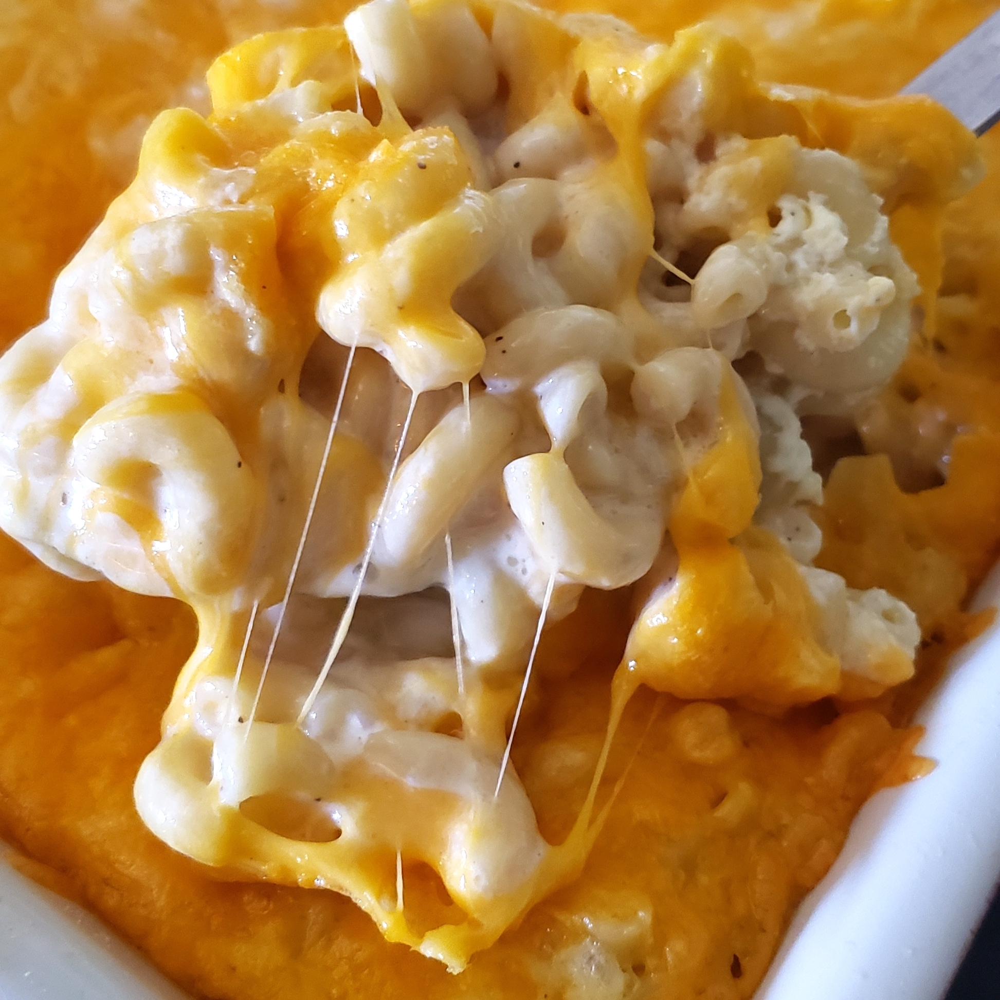

Grandma's Southern Mac and Cheese
If you don't want to hassle with leftovers from the potluck, just bring this dish. It's guaranteed to be licked clean. The macaroni is coated in a rich Cheddar sauce before getting baked to golden brown perfection.
Nutrition Facts
Per Serving: 478 calories; protein 27.8g; carbohydrates 19.1g; fat 32.1g; cholesterol 143.3mg; sodium 599mg.

Ingredients
- 1 pound elbow macaroni
- 4 pounds Cheddar cheese, sliced
- 1 ½ cups milk
- 5 eggs, or more to taste
- 1 tablespoon yellow mustard
- ground black pepper to taste
Directions
- Preheat oven to 300 degrees F (150 degrees C).
- Bring a large pot of lightly salted water to a boil. Cook elbow macaroni in the boiling water, stirring occasionally until tender yet firm to the bite, 8 minutes. Drain.
- Layer some of the macaroni in a 5-quart baking dish; top with a layer of Cheddar cheese. Continue layering macaroni and Cheddar cheese into the dish, ending with a Cheddar cheese layer.
- Beat milk, eggs, and mustard together in a bowl; pour over macaroni mixture, ensuring milk mixture gets to all of the macaroni.
- Bake in the preheated oven until cheese is melted and just before cheese around the sides gets crisp, 20 to 25 minutes. Season with black pepper.
Bon Appetit!